Real-time Barber Income Recording and Commission Calculation System via LINE Application
นาย สราวุฒิ อุยยาหาญ
674230027 หมู่เรียน 67/44
ในปัจจุบัน ธุรกิจร้านตัดผมมีการรับชำระเงินทั้งรูปแบบเงินสดและการโอนเงินผ่านระบบธนาคาร เมื่อลูกค้าชำระเงินด้วยการโอน ช่างหรือเจ้าของร้านต้องคอยสลับหน้าจอเพื่อเปิดแอปพลิเคชันธนาคารตรวจสอบยอดเงิน ซึ่งก่อให้เกิดความล่าช้า การบริการสะดุด และมีความเสี่ยงต่อการถูกหลอกลวงด้วยสลิปปลอมแปลงหรือการนำสลิปเก่ามาวนใช้ซ้ำ
นอกจากนี้ ด้านการคำนวณส่วนแบ่งค่าคอมมิชชันของช่างตัดผมยังอาศัยการจดบันทึกลงสมุดบัญชีด้วยมือ ทำให้เกิดความผิดพลาดในการคำนวณ ช่างตัดผมไม่สามารถตรวจสอบยอดรายได้สะสมของตนเองได้แบบเรียลไทม์ และเจ้าของร้านต้องเสียเวลาอย่างมากในการตัดรอบเคลียร์เงินสิ้นงวด
แนวทางแก้ไขปัญหาคือการพัฒนา ระบบอัตโนมัติผ่านแอปพลิเคชันไลน์ (LINE Application) ซึ่งเป็นแพลตฟอร์มการสื่อสารยอดนิยม โดยเชื่อมต่อระหว่าง LINE Official Account (LINE OA) และ LINE LIFF เพื่อให้ลูกค้าสามารถเลือกช่างตัดผม เลือกบริการ และแจ้งชำระเงินได้อย่างสะดวกรวดเร็ว
นำ Slip2Go API มาใช้ตรวจสอบสลิปโอนเงินธนาคารแบบอัตโนมัติ ยืนยันยอดเงินจริง บัญชีผู้รับเงิน และป้องกันการใช้สลิปซ้ำ พร้อมประมวลผลคำนวณค่าคอมมิชชันช่างแบบเรียลไทม์ผ่าน n8n Workflow Automation บน Railway Cloud บันทึกข้อมูลลงฐานข้อมูล MySQL และส่งใบเสร็จอิเล็กทรอนิกส์ (e-Receipt) ตอบกลับลูกค้าทางไลน์ทันที
พัฒนาระบบเว็บหลังบ้าน (Admin Backoffice) สำหรับจัดการข้อมูลช่าง บริการ ตรวจสอบประวัติบิล ทำโมฆะบิล (Void Bill) และตัดรอบเคลียร์เงิน (Settlement) พร้อมเชื่อมต่อแดชบอร์ดสรุปผลทางการเงินผ่าน Google Looker Studio
ฟังก์ชันและเป้าหมายหลักของระบบ:
ด้านผู้ดูแลระบบ (Admin / Backoffice):
จัดการข้อมูลช่างตัดผม (CRUD Barbers), รายการบริการ (CRUD Services), ตรวจสอบประวัติธุรกรรม, สั่งทำโมฆะบิล (Void Bill), ตัดรอบเคลียร์เงินจ่ายช่าง (CRUD Settlements) และตรวจสอบรายงานทางการเงินผ่าน Looker Studio
ด้านช่างตัดผม (Barber):
รับการแจ้งเตือนยอดเงินเข้าและส่วนแบ่งค่าคอมมิชชันเข้าไลน์ส่วนตัวแบบเรียลไทม์, รับสลิปแจ้งยอดตัดรอบเคลียร์เงิน และรับแจ้งเตือนเมื่อมีการทำโมฆะบิล
ด้านลูกค้าผู้ใช้บริการ (Customer):
เข้าสู่ระบบผ่านริชเมนูบน LINE OA, เลือกช่างและบริการผ่านหน้าเว็บลิฟต์ (LIFF), ชำระเงินสดหรือโอนเงินผ่าน QR Code พร้อมแนบสลิป และรับใบเสร็จ e-Receipt ทางไลน์
ฮาร์ดแวร์ที่ใช้ในการพัฒนา
ซอฟต์แวร์ที่ใช้ในการพัฒนา
ฮาร์ดแวร์ที่ใช้ระบบคลาวด์
ซอฟต์แวร์ที่ใช้ระบบคลาวด์
ซอฟต์แวร์ที่ใช้ระบบคลาวด์ (ต่อ)
การดำเนินงานของร้านตัดผมในปัจจุบัน มีปัญหาสำคัญใน 2 ด้านหลัก ได้แก่ ปัญหาเงินเข้า (Incomes) ที่ต้องสลับแอปธนาคารตรวจสลิปด้วยสายตา มีโอกาสตกหล่นและเสี่ยงต่อสลิปปลอมแปลง และ ปัญหาเงินออก (Payouts / Settlements) ที่ต้องจดบันทึกลงสมุดด้วยมือ ทำให้ช่างไม่ทราบยอดสะสม และการตัดรอบจ่ายเงินใช้เวลานาน
การวิเคราะห์ปัญหาด้วยแผนภูมิก้างปลา (Fishbone Diagram 4 ด้าน):
1. ด้านบุคลากร (People): เจ้าของร้านเสียเวลาตรวจสอบด้วยตา ช่างไม่ทราบยอดเงินเข้าแบบเรียลไทม์
2. ด้านกระบวนการทำงาน (Process): คิดส่วนแบ่งด้วยมือ ล่าช้า ไม่มีขั้นตอนโมฆะบิลที่เป็นมาตรฐาน
3. ด้านเทคโนโลยี (Technology): ขาดระบบตรวจสอบสลิปอัตโนมัติ และไม่มีการออกใบเสร็จอิเล็กทรอนิกส์
4. ด้านข้อมูลความปลอดภัย (Data & Security): ข้อมูลในสมุดเสี่ยงสูญหาย และไม่มีระบบป้องกันสลิปวนใช้ซ้ำ
1. พิชยา สุขปลั่ง และคณะ (2568)
ทำการวิจัยเรื่อง "การพัฒนาระบบแจ้งซ่อมอัจฉริยะผ่านแชทบอท กรณีศึกษาเทศบาลตำบลหวายเหนียว" โดยประยุกต์ใช้ LINE API, Node-RED และ MySQL ช่วยให้ประชาชนแจ้งเหตุได้สะดวกรวดเร็ว และเจ้าหน้าที่ติดตามสถานะได้แบบเรียลไทม์ ผลการประเมินความพึงพอใจอยู่ในระดับมาก (ค่าเฉลี่ย 4.50)
2. ถนอม กองใจ และ อริษา ทาทอง (2565)
ทำการวิจัยเรื่อง "การพัฒนาระบบแจ้งเตือนกิจกรรมและการนัดหมายอัตโนมัติผ่านแอปพลิเคชันไลน์ มหาวิทยาลัยเชียงใหม่" โดยประยุกต์ใช้ Google Apps Script และ LINE Notification ช่วยลดปัญหาการลืมนัดหมายและเพิ่มประสิทธิภาพการบริหารจัดการเวลาอย่างมีนัยสำคัญ
3. พิษณุ ใจกล้า และ แก้ววราภรณ์ กรแก้ว (2569)
วิจัยเรื่อง "การประยุกต์ใช้แพลตฟอร์มการทำงานอัตโนมัติแบบโอเพนซอร์ส (n8n) ในการจัดการและแจ้งเตือนข้อมูลทางอีเมล มธ." ใช้ n8n เชื่อมโยง SQL และ API ช่วยลดความซ้ำซ้อนและเพิ่มความแม่นยำในการประมวลผล
4. พริษฐ์กวินท์ นาควะรี และคณะ (2569)
วิจัยเรื่อง "การพัฒนาตัวแทนปัญญาประดิษฐ์เพื่อการบริการตอบคำถาม: น้องไลฟ์ลอง KLLC สจล." ใช้ n8n Self-Hosted ร่วมกับ LINE OA รองรับการตอบกลับอัตโนมัติ 24 ชั่วโมงอย่างมีประสิทธิภาพ
5. อภิสิทธิ์ โยลัย และคณะ (2565)
วิจัยเรื่อง "แอปพลิเคชันการจองคิวร้านเสริมสวย มรภ.มหาสารคาม" พัฒนาด้วย PHP, JavaScript และ MySQL ช่วยแก้ปัญหาการรอคิวและการจัดการของร้านเสริมสวย ความพึงพอใจอยู่ในระดับมากที่สุด (4.55)
1. เอ็นเอทเอ็น (n8n) คือ เวิร์กโฟลว์ออโตเมชันทูล (Workflow Automation Tool) แบบโอเพนซอร์ส ทำหน้าที่เป็นแกนหลักในการรับ Webhook จาก LINE LIFF, ส่งภาพสลิปไปตรวจสอบ, คำนวณส่วนแบ่งค่าคอมมิชชันช่าง, บันทึกฐานข้อมูล MySQL และสั่งส่งข้อความแจ้งเตือนอัตโนมัติ
2. ไลน์เมสเสจจิ้ง เอพีไอ (LINE Messaging API) คือ เอพีไอหลักที่ทำหน้าที่เป็นช่องทางการสื่อสารระหว่างระบบกับผู้ใช้งานบนแอปพลิเคชันไลน์ ใช้สำหรับส่งใบเสร็จรับเงินอิเล็กทรอนิกส์ (e-Receipt), ข้อความแจ้งเตือนช่างเมื่อมีเงินเข้า, และข้อความแจ้งเตือนโมฆะบิล
3. ไลน์ออฟฟิเชียลแอคเคาท์ (LINE Official Account) คือ บัญชีทางการของร้านตัดผมที่เชื่อมต่อกับระบบ ทำหน้าที่เป็นจุดศูนย์กลางในการสื่อสาร พร้อมติดตั้งริชเมนู (Rich Menu) ให้ลูกค้าสามารถกดเปิดหน้าเว็บแจ้งชำระเงินและดูบริการได้อย่างสะดวก
4. ไลน์ ฟรอนต์เอนด์ เฟรมเวิร์ก หรือลิฟต์ (LINE LIFF) คือ แพลตฟอร์มสำหรับสร้างหน้าเว็บแอปพลิเคชันที่ทำงานฝังอยู่ภายในไลน์ ทำหน้าที่ดึงข้อมูล User ID และเป็นหน้าจอให้ลูกค้าเลือกช่างตัดผม เลือกบริการ และอัปโหลดสลิปชำระเงินได้อย่างไร้รอยต่อ
5. สลิปทูโก เอพีไอ (Slip2Go API) คือ บริการเอพีไอสำหรับตรวจสอบความถูกต้องของสลิปโอนเงินธนาคารแบบอัตโนมัติ โดยอ่าน QR Code และข้อมูลสลิปเพื่อยืนยันยอดเงินจริง ตรวจสอบบัญชีผู้รับเงิน และป้องกันการนำสลิปเก่ามาวนใช้ซ้ำ
6. กูเกิลลุกเกอร์สตูดิโอ (Google Looker Studio) คือ เครื่องมือสร้างรายงานและแดชบอร์ดสรุปผลทางการเงินเชิงวิเคราะห์ เชื่อมต่อกับฐานข้อมูล MySQL เพื่อแสดงสถิติยอดขายรวม, ค่าคอมมิชชันช่างสะสม, และรายได้สุทธิของร้านในรูปแบบแผนภูมิที่เข้าใจง่าย
7. มายเอสคิวแอล (MySQL) คือ ระบบจัดการฐานข้อมูลเชิงสัมพันธ์ (Relational Database) ประสิทธิภาพสูง ใช้จัดเก็บข้อมูลสำคัญทั้งหมดของระบบ ได้แก่ ข้อมูลช่างตัดผม, รายการบริการ, ประวัติธุรกรรมเงินเข้า (transactions) และประวัติการตัดรอบเคลียร์เงิน (payouts)
8. เรลเวย์ (Railway) คือ คลาวด์แพลตฟอร์ม (Cloud Infrastructure) สำหรับติดตั้งและรันระบบเซิร์ฟเวอร์ n8n และฐานข้อมูล MySQL ตลอด 24 ชั่วโมง มีความเสถียรสูง พร้อมระบบรักษาความปลอดภัยและการสำรองข้อมูลอัตโนมัติ
9. เอชทีเอ็มแอล (HTML) คือ ภาษาโครงสร้างมาตรฐานที่ใช้ในการสร้างหน้าเว็บฟอร์มแจ้งชำระเงินบน LINE LIFF และระบบเว็บแอดมินจัดการหลังบ้าน (Admin Backoffice) เพื่อจัดวางองค์ประกอบให้ใช้งานได้ง่ายและตอบสนองทุกอุปกรณ์
10. จาวาสคริปต์ (JavaScript) คือ ภาษาสคริปต์สำหรับเขียนตรรกะการทำงานฝั่งผู้ใช้ (Client-Side Logic) จัดการการเชื่อมต่อกับ LIFF SDK, ตรวจสอบความถูกต้องของข้อมูลในแบบฟอร์ม, การแปลงไฟล์ภาพเป็น Base64 และส่งข้อมูล Webhook
11. เจซัน (JSON) คือ รูปแบบมาตรฐานในการจัดเก็บและแลกเปลี่ยนข้อมูลระหว่างระบบในโครงการ ใช้ในการส่งข้อมูลระหว่างหน้าเว็บ LIFF, n8n, Slip2Go API, MySQL Database และโครงสร้างข้อความ LINE Flex Message
12. การปฏิบัติการซีอาร์ยูดี (CRUD Operations) คือ ฟังก์ชันพื้นฐานในการจัดการฐานข้อมูล 4 ประการ ได้แก่ สร้าง (Create), เรียกดู (Read), ปรับปรุง (Update) และ ลบ (Delete) สำหรับบริหารข้อมูลช่าง, บริการ, ประวัติธุรกรรม และการตัดรอบเคลียร์เงิน
13. ไลน์เฟล็กซ์แมสเสจ (LINE Flex Message) คือ รูปแบบข้อความอินเตอร์แอคทีฟบนไลน์ที่สามารถจัดเลย์เอาต์ได้อย่างสวยงาม ใช้สร้างใบเสร็จรับเงินอิเล็กทรอนิกส์ (e-Receipt), สลิปแจ้งยอดเคลียร์เงินช่าง (Payout Voucher) และข้อความแจ้งเตือนโมฆะบิล
ระบบงานเดิม (Existing System):
เมื่อลูกค้าชำระเงินโอน ช่างต้องสลับหน้าจอไปเปิดแอปธนาคารตรวจสลิป การคิดส่วนแบ่งค่าคอมมิชชันใช้การจดบันทึกลงสมุดด้วยมือ มีโอกาสตกหล่นและคำนวณผิดพลาดสูง การตัดรอบเคลียร์เงินสิ้นงวดล่าช้า และช่างไม่สามารถตรวจสอบรายได้ของตนเองแบบเรียลไทม์
ระบบงานใหม่ (Proposed System):
ลูกค้าเลือกช่างและบริการผ่าน LINE LIFF ตรวจสอบสลิปอัตโนมัติด้วย Slip2Go API คำนวณส่วนแบ่งคอมมิชชันตามผลงานจริง บันทึกลง MySQL และแจ้งเตือนช่างทันทีแบบเรียลไทม์ พร้อมออกใบเสร็จ e-Receipt และมีระบบเว็บแอดมินสำหรับโมฆะบิลและตัดรอบเคลียร์เงินอย่างเป็นระบบ
ขอบเขตของระบบ (System Scope & Functions):
ฮาร์ดแวร์ที่ใช้กับระบบงาน
ซอฟต์แวร์ที่ใช้กับระบบงาน
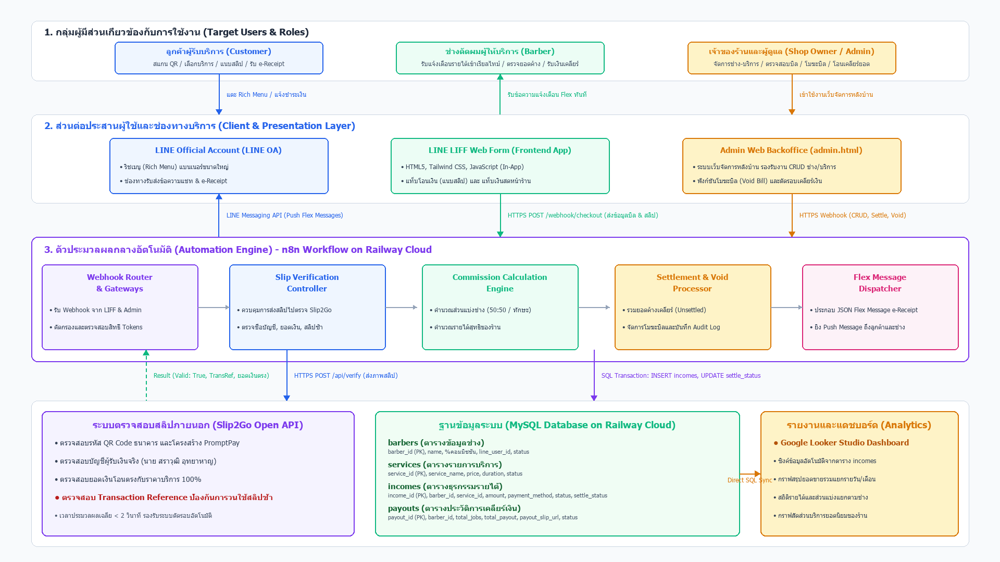
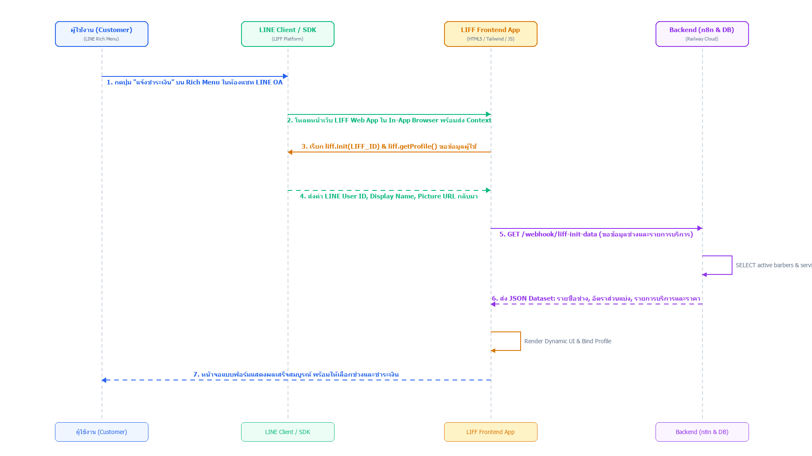
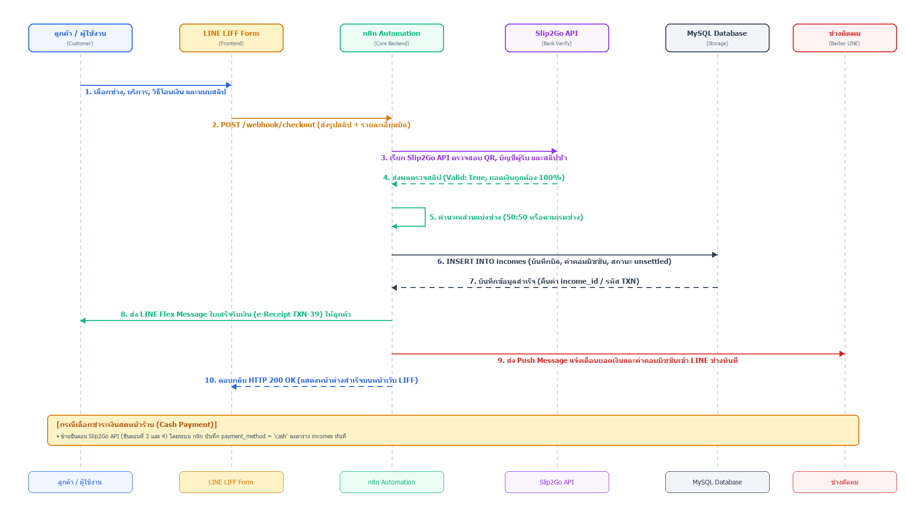
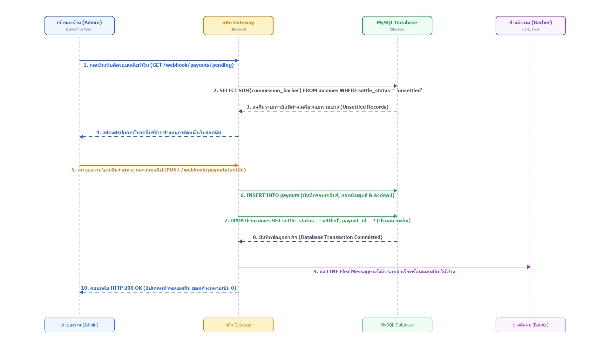
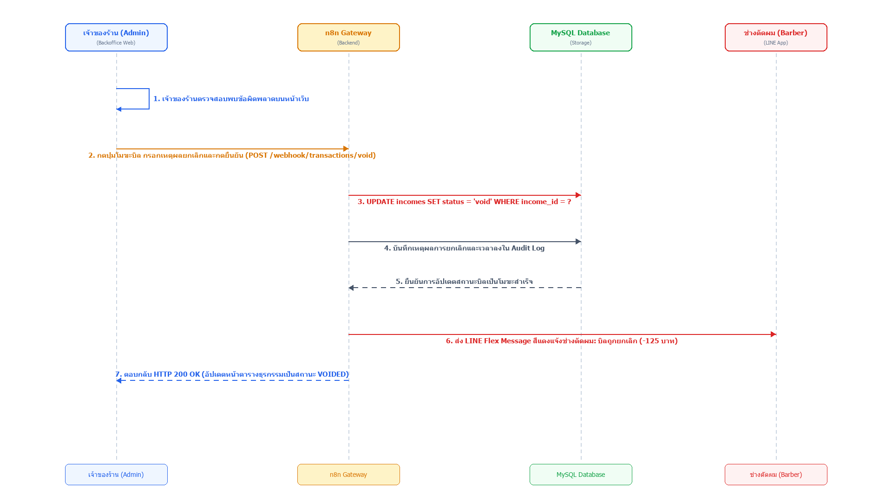
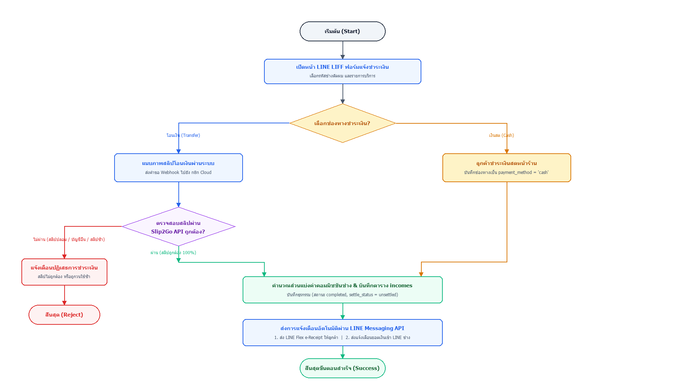
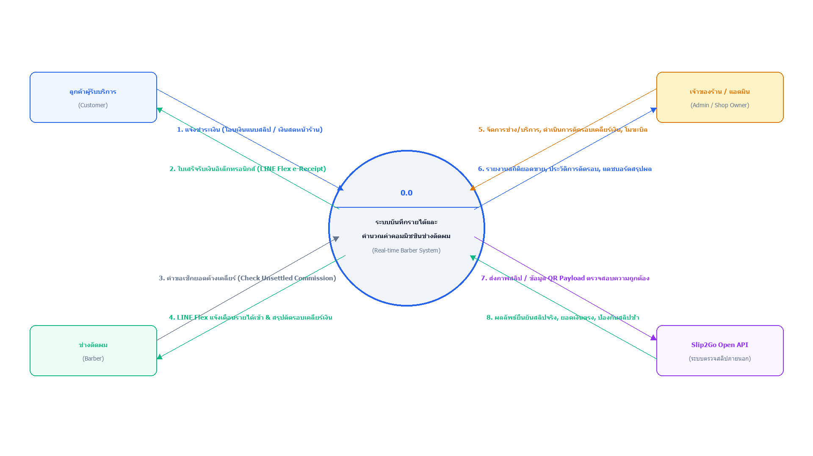
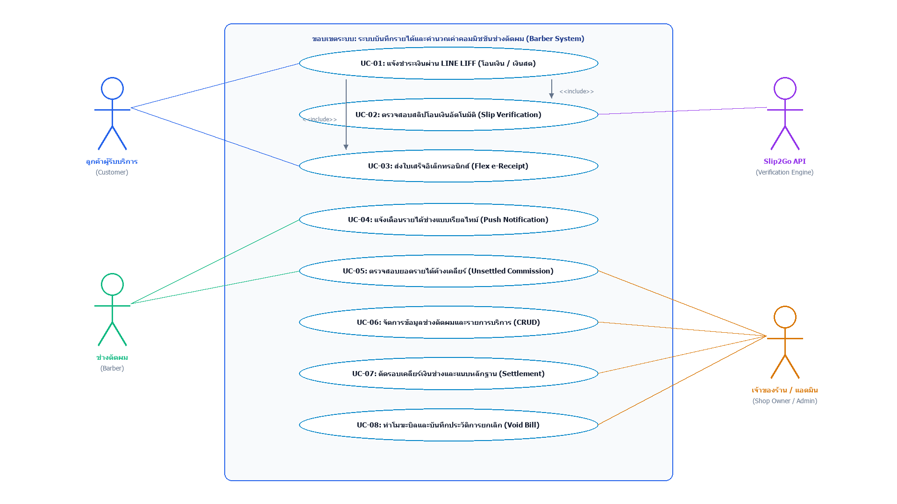
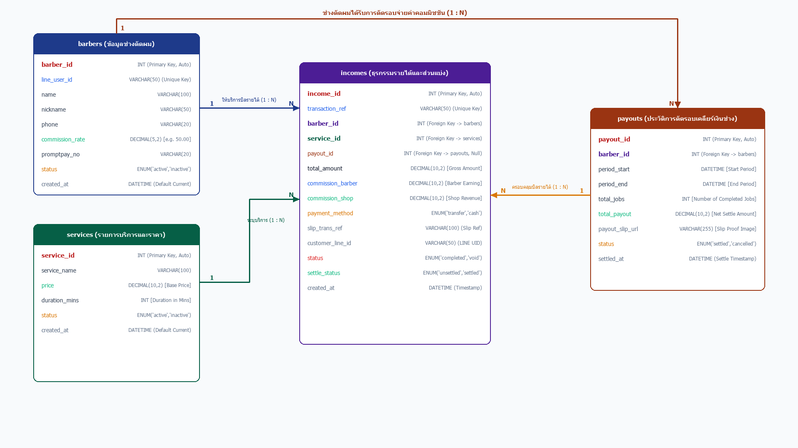
| ลำดับ (No) | คุณสมบัติ (Attribute) | คำอธิบาย (Description) | ขนาด (Width) | ประเภท (Type) | ประเภทคีย์ (Key Type) |
|---|---|---|---|---|---|
| 1 | user_id | รหัสประจำตัวผู้ใช้งาน/ช่างตัดผม | - | INT | PK |
| 2 | line_uid | รหัสประจำตัวผู้ใช้บนไลน์ (LINE User ID) | 100 | VARCHAR | - |
| 3 | full_name | ชื่อ-นามสกุลจริงของช่าง | 255 | VARCHAR | - |
| 4 | nickname | ชื่อเล่นของช่างสำหรับแสดงหน้าร้าน | 100 | VARCHAR | - |
| 5 | role | สิทธิ์การใช้งานระบบ ('admin', 'barber') | 20 | VARCHAR | - |
| 6 | commission_rate | อัตราส่วนแบ่งคอมมิชชันของช่าง (เช่น 0.50) | 5,2 | DECIMAL | - |
| 7 | is_active | สถานะการทำงาน (1 = พร้อมทำงาน, 0 = พักงาน) | 1 | TINYINT | - |
| ลำดับ (No) | คุณสมบัติ (Attribute) | คำอธิบาย (Description) | ขนาด (Width) | ประเภท (Type) | ประเภทคีย์ (Key Type) |
|---|---|---|---|---|---|
| 1 | service_id | รหัสประจำตัวบริการ | - | INT | PK |
| 2 | service_name | ชื่อรายการบริการตัดผม | 255 | VARCHAR | - |
| 3 | base_price | ราคาค่าบริการมาตรฐาน (บาท) | 10,2 | DECIMAL | - |
| 4 | duration_mins | ระยะเวลาให้บริการโดยประมาณ (นาที) | - | INT | - |
| 5 | image_url | ที่อยู่ไฟล์ภาพตัวอย่างทรงผม | 500 | VARCHAR | - |
| 6 | is_active | สถานะเปิดให้บริการ (1 = เปิด, 0 = ปิด) | 1 | TINYINT | - |
| ลำดับ (No) | คุณสมบัติ (Attribute) | คำอธิบาย (Description) | ขนาด (Width) | ประเภท (Type) | ประเภทคีย์ (Key Type) |
|---|---|---|---|---|---|
| 1 | transaction_id | รหัสประจำตัวธุรกรรม/บิล | - | INT | PK |
| 2 | bill_no | เลขที่ใบเสร็จรับเงิน (เช่น TXN-39) | 50 | VARCHAR | - |
| 3 | user_id | รหัสช่างผู้ให้บริการตัดผม | - | INT | FK |
| 4 | payment_method | ช่องทางชำระ ('cash', 'transfer') | 20 | VARCHAR | - |
| 5 | amount | ยอดเงินค่าบริการจริงที่ชำระ | 10,2 | DECIMAL | - |
| 6 | commission_amount | ส่วนแบ่งค่าคอมมิชชันช่าง | 10,2 | DECIMAL | - |
| 7 | trans_ref | เลขอ้างอิงสลิปธนาคาร (ป้องกันสลิปซ้ำ) | 100 | VARCHAR | - |
| 8 | status | สถานะบิล ('paid', 'void') | 20 | VARCHAR | - |
| ลำดับ (No) | คุณสมบัติ (Attribute) | คำอธิบาย (Description) | ขนาด (Width) | ประเภท (Type) | ประเภทคีย์ (Key Type) |
|---|---|---|---|---|---|
| 1 | payout_id | รหัสประจำตัวรอบการเคลียร์เงิน | - | INT | PK |
| 2 | payout_no | เลขที่รอบเคลียร์เงิน (เช่น PAY-202610-01) | 50 | VARCHAR | - |
| 3 | user_id | รหัสช่างตัดผมที่รับเงินส่วนแบ่ง | - | INT | FK |
| 4 | total_jobs | จำนวนงาน/หัวที่ให้บริการในรอบนี้ | - | INT | - |
| 5 | total_commission | ยอดเงินคอมมิชชันสุทธิที่โอนจ่ายช่าง | 10,2 | DECIMAL | - |
| 6 | slip_url | ที่อยู่ไฟล์ภาพสลิปหลักฐานการจ่ายเงิน | 500 | VARCHAR | - |
| 7 | settled_at | วันและเวลาที่ทำรายการเคลียร์เงินสำเร็จ | - | DATETIME | - |
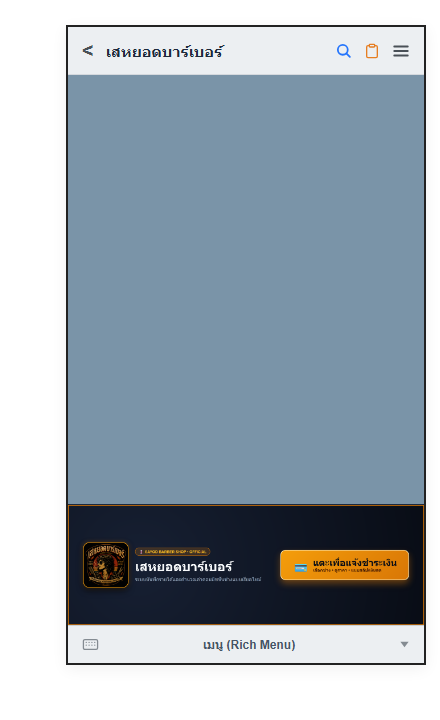
หน้าริชเมนู (Rich Menu Page): ออกแบบให้แสดงอยู่ด้านล่างของหน้าต่างแชท LINE Official Account ของร้าน แบ่งออกเป็น 2 บทบาท:
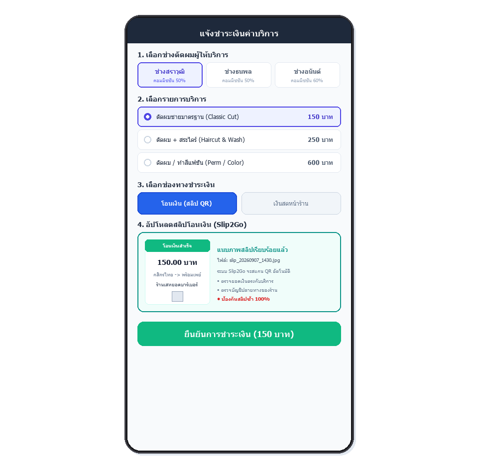
หน้าจอแจ้งชำระเงิน (LIFF Form Page): เป็นหน้าเว็บแอปพลิเคชันที่ฝังในไลน์ ลูกค้าสามารถเลือกช่างตัดผมพร้อมรูปถ่าย, เลือกบริการตัดผม และเลือกช่องทางชำระเงิน:
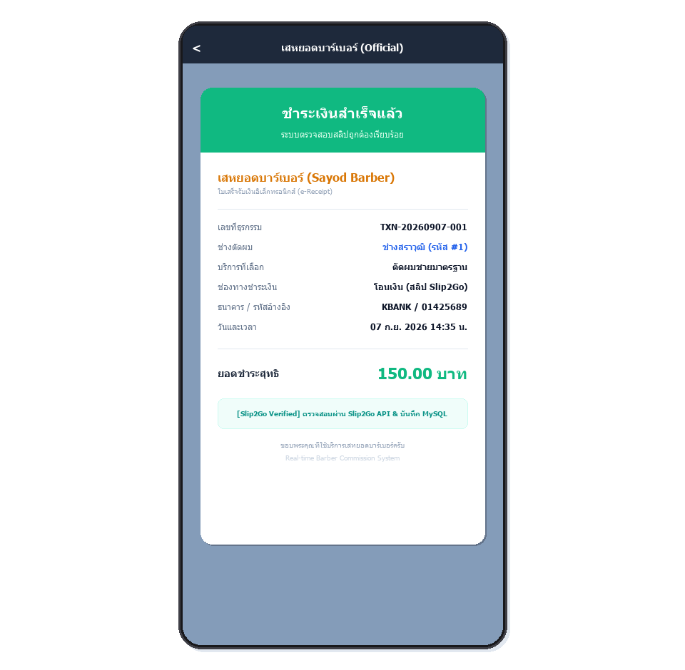
ใบเสร็จรับเงินอิเล็กทรอนิกส์ (e-Receipt): สร้างด้วย LINE Flex Message ส่งตรงเข้าแชทไลน์ของลูกค้า ระบุเลขที่บิลจริง (TXN-xx), ชื่อช่าง, บริการ, ยอดเงิน และเวลาชำระเงินอย่างเป็นทางการ
ข้อความแจ้งเตือนช่างตัดผม: ระบบส่งข้อความแจ้งเตือนเงินเข้าและค่าคอมมิชชันที่ได้รับแบบเรียลไทม์เข้าไลน์ช่างทันที ทำให้ช่างรับทราบยอดได้ทันที
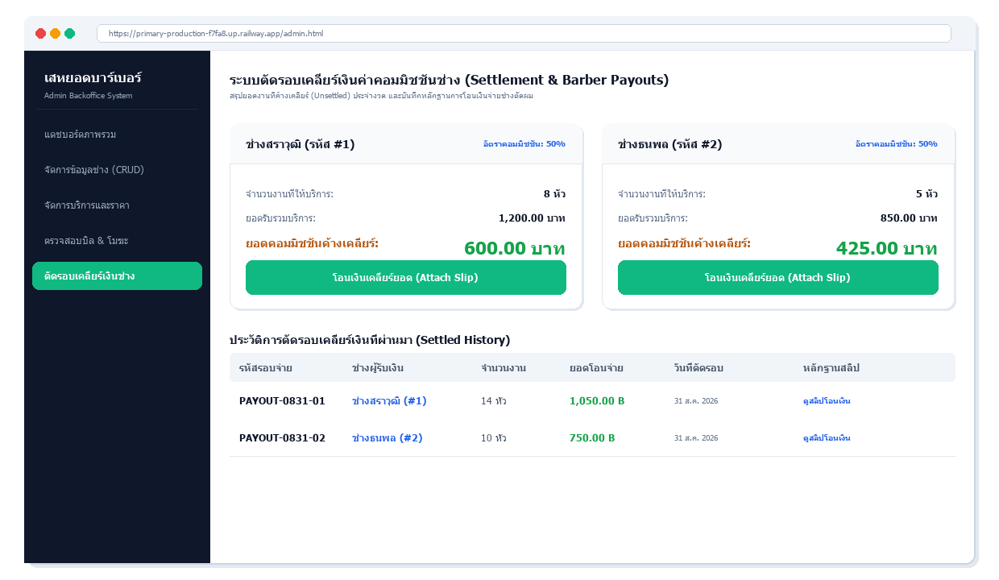
ระบบเว็บแอดมินหลังบ้าน (Admin Backoffice Page): พัฒนาเพื่อให้เจ้าของร้านควบคุมดูแลกิจการได้แบบรวมศูนย์:
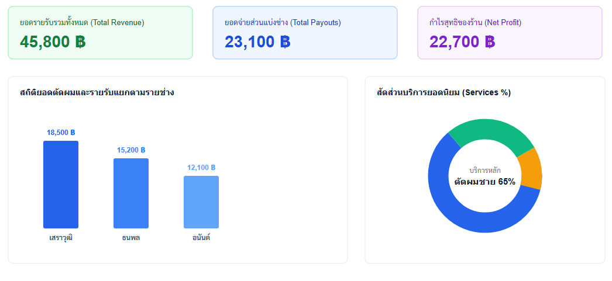
ระบบตัดรอบเคลียร์เงินช่าง (Barber Settlement): สรุปยอดค่าคอมมิชชันสะสมของบิลที่ค้างเคลียร์ (unsettled) อัตโนมัติ พร้อมหน้าต่างแนบสลิปจ่ายช่าง และส่ง Payout Flex แจ้งช่างทันที
แดชบอร์ด Google Looker Studio: รายงานสถิติยอดขายรวม, ค่าคอมมิชชันช่างแต่ละคน, ช่องทางการชำระเงิน และตัวกรองช่วงเวลา เพื่อวิเคราะห์ผลประกอบการร้าน
📱 1. ฝั่งลูกค้า (LINE LIFF)
• เลือกช่างตัดผมและรายการบริการพร้อมดูรูปตัวอย่าง
• เลือกชำระเงินสด หรือ สแกนโอนเงินผ่าน PromptPay QR
• รับใบเสร็จรับเงิน e-Receipt ตอบกลับทาง LINE ทันที
⚡ 2. ฝั่งประมวลผลอัตโนมัติ (n8n + Slip2Go)
• Slip2Go API ตรวจสอบสลิป ป้องกันสลิปซ้ำ และตรวจยอดเงิน
• n8n คำนวณส่วนแบ่งค่าคอมมิชชันช่างตามอัตราเปอร์เซ็นต์จริง
• บันทึกธุรกรรมลงฐานข้อมูล MySQL บน Railway Cloud
🔔 3. ฝั่งช่างตัดผม (Barber Alert)
• รับการแจ้งเตือนยอดเงินเข้าและค่าคอมมิชชันผ่านแชท LINE เรียลไทม์
• รับสลิปแจ้งยอดเคลียร์เงินและแจ้งเตือนเมื่อมีบิลโมฆะ
💻 4. ฝั่งเจ้าของร้าน (Admin & Looker)
• จัดการ CRUD ข้อมูลช่างและบริการ
• สั่งทำโมฆะบิล (Void Bill) พร้อม Audit Log
• ตัดรอบเคลียร์เงินช่าง (Settlement) และดูสถิติ Looker Studio